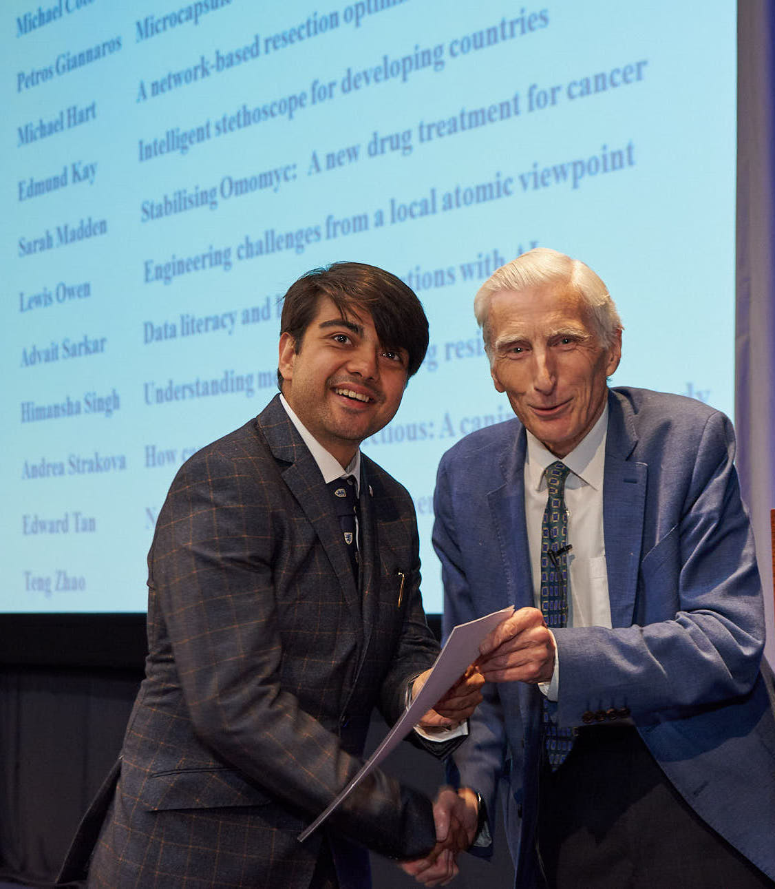
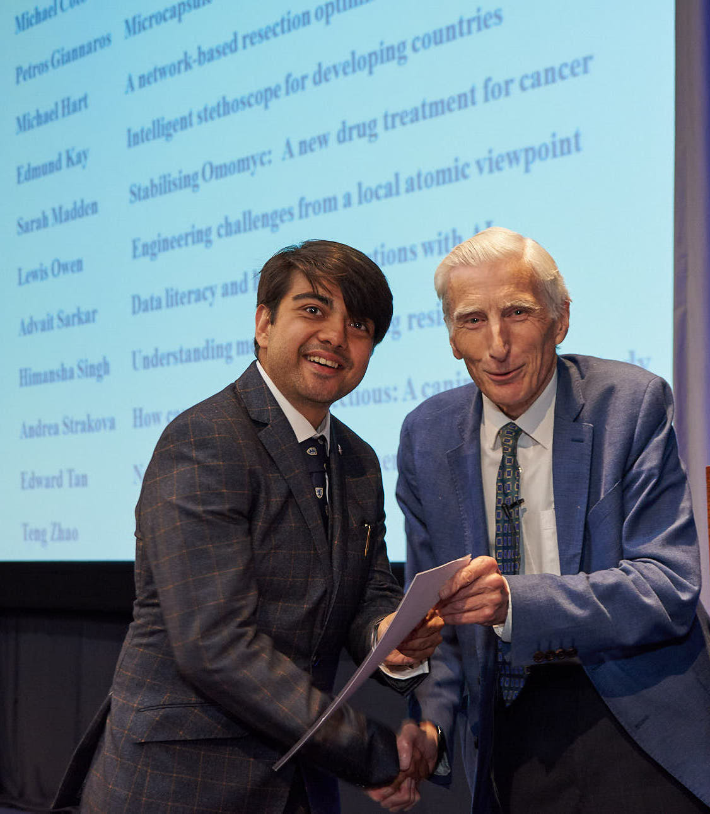
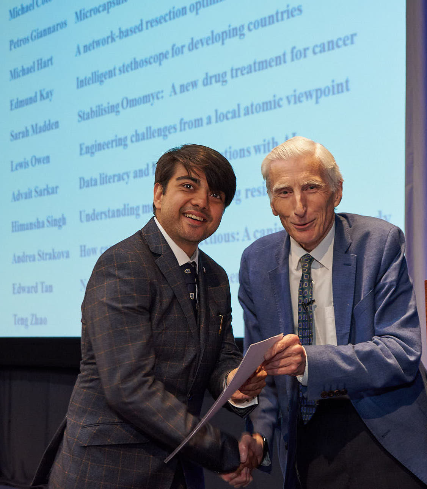

Receiving CSAR award from Lord Martin Rees (2017)
I'm a researcher at Microsoft Research Cambridge and an affiliated lecturer of computer science at the University of Cambridge.
I study: (1) how to design human interfaces for artificial intelligence, and (2) how to help people program and interact with data. The two have more in common than you'd think! Read my research here.
I advise the UK government, other national governments, and regulatory bodies. I advise on matters relating to technology, society, automation, and data. See my roles and policy work here.
In 2016 I completed my PhD in computer science at the University of Cambridge, as a member of the marvellous Graphics and Interaction Group ("Rainbow"). I was jointly supervised by Alan Blackwell, Mateja Jamnik, and Martin Spott. Prior to that, I completed my BA and MEng in computer science, also at Cambridge, in 2012 and 2013 respectively.
